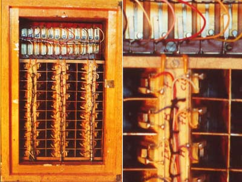

|
The Hohner Hohnerola appears to be a moderately complex organ for its era, some time around the 50's at a guess. This one I found sitting on a trailer at a local garage sale. I looked it over, saw that it was old enough to be at least partially tube based, then asked how much it was. The owner wanted $100 for it, which wasn't bad, but I wasn't that rich. I had bought other items and was going to get the ute, to save carrying the items to where I had parked. The owner saw his chance of a sale vanishing and reminded me that I hadn't bought the organ yet. Moments later we had agreed that if I gave him $50, he wouldn't have to think about the thing again. Getting it off the ute at home was a challenge, as there was no one to assist me. I even got bogged on the front lawn. Finally I got the thing inside. When I powered it up there was no sound, other than the usual background noise you would expect from an unserviced amplifier. The thing looks as if it is from the fifties, and obviously used tubes, though was not as heavy as one may expect for something full of inductors. I took off the back to see what was going on with the tone generators. To the left was quite a nice tube amp with what appears to be push-pull EL12/275 output, and a substantial 12 inch speaker. To the right, on shock mounts was a large chipboard box. At this point I knew exactly was I was looking at. So after removing a dozen screws, I removed the box side and was presented with ... a box. Ever get the feeling you were in a Warner Brothers cartoon? Again I removed a dozen screws, and removed the lid, and guess what... another box. This time admittedly there was something else - a crafted wood blower housing with a dirty great electric motor sticking out of it. More screws were removed, and this time I hit paydirt. There are over 80 little reeds, much like those in a Wurlitzer electric piano, though this time they are excited by the blower. Pickup appears to be electrostatic. Unfortunately the motor has gone open-circuit, probably due to corrosion, as there appears to be a moderate amount of corrosion in the reed box, despite the silica gel and all the successive boxes. The successive boxes are to kill any sound escaping from all those vibrating reeds, and possibly to isolate the reeds from any external interference as well, though the former is definitely the main reason. Each box was separated from the box it contained by a 1/2 inch layer of foam, though this has long since turned to dust. Searching the internet I found mention of it once or twice, but with no details or photos. I get the feeling this thing is historically significant, and quite rare. It has a single 61 key keyboard, with 16', 8', 4', 2 2/3', and 2' stops, as well as four filter stops: tief (deep), mittel (middle), hoch (high), scharf (sharp). There is also vibrato. It also has an optional extra pedal board, and optional extra expression pedal. Volume is usually controlled by a sprung knee lever if the expression pedal is not present. It is in a beautiful 50's style varnished (pine?) pale colored console. Searching through my junk, I found another motor with a 1/4 inch shaft, though this motor is a 12 volt D.C. servo motor from a Telex machine. It is capable of spinning up the roughly 6 inch aluminium impeller. The result was reeds whizzing back and forward as much as 1/4 inch, and cacophony! Replacing the first box lid, and completing the air path reduced the noise a little, but those extra boxes and foam really are needed. Too bad I can't get it back together with the DC motor hanging out the back. Each box has a lip inside it to which the lid is screwed. The inner boxes are an extremely tight fit through these lips. This all adds to the difficulty of reassembly. With the expression pedal cranked to the maximum, the output can be heard above racket from the reeds, along with assorted cracks and pops. There are two main electronic modules, the power amp, and what I guess to be a pre-amp and "vibrato" circuit. The vibrato has an on/off switch and a depth control, and as could be expected, is really a tremolo. I guess phase shift vibrato was too expensive for most of these organ builders to employ. The outputs from the reeds go to an array of switch contacts, where each reed is wired to at least five switch contacts on various keys, for the various footages, plus overlap where the "correct" reed has not been implemented. This means the 4' register repeats the top C, and the 2' register repeats the top C twice, along with a repeat of all notes between. Some repeating occurs at the bottom with the 16' register as well. Each register is switched in or out by rotating the busbar to which these contacts are pressed. The rotation moves the bus so that the contacts either hit the metal of the bus, or the insulator in which it is encapsulated. There is also another bus that seems to kick in when no registers are selected, under solenoid control. The remaining four tabs switch in and out the filter circuits mentioned above. The Hohnerola has other problems as well. Some key contacts are not returning home when a key is released. Some keys produce a vicious beating or discord, though exactly what is going on is hard to tell over the din from the reed box. Perhaps some reeds have gone out of tune. Perhaps there is some interaction between switched circuits via leaky capacitors. Much experimenting later, I am sure the reeds themself are faulty - swapping the wires with a working reed results in the fault following the reed, and not the circuitry. How does a single reed produce a cacophony? Perhaps this occurs by mechanical interference caused by the reed hitting part of the mounting as it vibrates. Now I have to decide what to do with the thing. The sound is interesting, perhaps even shrill. It is certainly harmonic rich. It will require a lot of work to get it running well enough to use. Replacing the foam between some of the reed boxes would be near impossible, though I have achieved this for one box. It would make a lovely console for building a tube synthesizer into, at the risk of getting lynched by enraged Hohner collectors. I really don't want to destroy any historically significant equipment. The Hohnerola when viewed from behind. The reed boxes are open.
 Epiloge
Having found that there was no way to repair the faulty reeds, due to the construction methods used in this organ, and a total lack of response from any potentially interested parties (e.g. web museums) it was stripped. I am currently building a synthesizer into its case.
Article, art & design copyright 1999 by Ken Stone
|